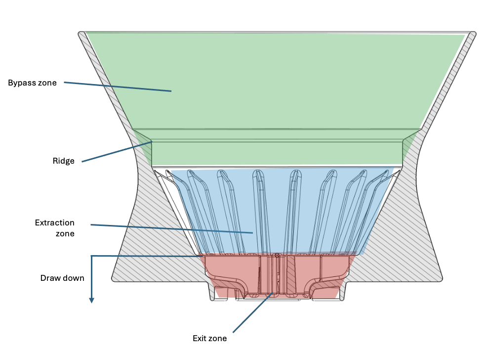

At a fixed dose and beverage weight, dissolving more coffee makes the cup stronger. Your point travels up and to the right.
Kode of Brewing
FB45 / Brewing phases
Bloom, Turbulence, Drawdown
Ready to bloom0:000 g poured
Pink: bloom · green: pouring · pale: pauses · purple: drawdown. Playback is accelerated; water movement illustrates mixing, not measured velocities. Maximum pouring flow: 10 g/s.
Circular pouring defaults to one circle every 4 seconds of brewing time, shown side to side in this cutaway. Advanced mode lets you adjust the pace. Playback speed also accelerates the circles. The circles pause between pulses. Centre pouring stays in the middle. Local erosion and redeposition determine the evolving bed shape.
Lower means faster circles. This is brewing time; playback speed is separate. Applies to circular pouring.
Changes restart the simulation. More dose deepens the bed; more water changes concentration and can also increase extraction. Temperature changes the separate extraction estimate. Pour rate, height and water depth drive the approximate bed movement.
FB45 design & brewing simulation

The cutaway follows Kode’s FB45 design, with a taut, flat-bottom wave filter resting against the ridge.
The animation shows how pouring can lift and circulate the grounds, followed by settling and drawdown. Movement, water levels and brew times are approximate. The animation has not yet been calibrated against FB45 measurements, and the extraction estimate is calculated separately from the movement of the grounds.
The mild and bold recipes come from Kode of Brewing. Medium is an example recipe between the two. The model can be refined as more brewing footage and measurements become available.
Further reading: Park et al. (2025), mixing and avalanches in a pour-over bed; Jonathan Gagné, The Physics of Kettle Streams. See also YUKI’s Coffee University: half-cut brewers and thermal imaging. These sources help explain the movement shown here; they do not validate this simulation for the FB45.
Coffee Control Chart
FB45 · POUR OVER
100%
Extraction: material dissolved
At the same dose and beverage weight, extracting more moves a brew up and to the right: more dissolved coffee, greater strength.
Strength: concentration in the cup
Using less coffee can offset higher extraction. The bold recipe explores more extraction at a similar strength to the mild recipe.
Coffee colours illustrate concentration and are not a prediction of beverage appearance; roast and filtration also affect colour. Playback illustrates the change between recipe estimates, not live beverage measurements. The shaded area is a common starting range, not a quality boundary.
Brew ratio
The dotted line shows brews made with the same amount of coffee and water. Extract more along this line and the coffee becomes stronger.
Actual Brew
Use collected beverage weight, not brewing-water weight.
Preferred Ranges
Set your own starting preferences. These ranges describe preference, not a boundary between good and bad coffee.
More coffee for the same brewing water generally makes a stronger cup. Here, dose moves strength while model extraction stays fixed.
Try the bold recipe: more extraction, less coffee, similar strength. Mild, medium and bold refer to extraction here — not roast or quality.
From the Kode brewing draft
Calculations & references
Mild, medium and bold describe extraction styles. They are not fixed quality grades. Flavour also depends on the coffee, roast, water and how evenly the grounds are extracted. Higher extraction can still taste good.
Hotter water, finer grinding, more agitation and longer pauses between pulses can increase extraction. Their effects depend on the recipe: cooling, uneven flow and filter clogging can change the result.
Both Kode recipes use 250 g of water. This version uses a 7–10 second agitating pour for the mild recipe and a 30-second rest after the bold recipe’s bloom.
For recipe estimates, beverage weight is calculated as brewing water minus twice the coffee dose, allowing for water retained by the grounds. TDS (%) = extraction yield (%) × dose ÷ beverage weight. These are estimates, not refractometer readings.
In Actual mode, TDS comes from your refractometer. Extraction yield (%) = TDS (%) × measured beverage weight ÷ dry coffee dose. The starting preference ranges are 18–22% extraction and 1.10–1.40% TDS; you can change them.
The Coffee Control Chart builds on the work of E. E. Lockhart and later approaches from the SCA, Jonathan Gagné and Vince Fedele. Read Barista Hustle on brew ratio, strength and extraction and Coffee ad Astra on extraction and flavour. Recipes and FB45 design: Kode of Brewing, Gordon Howell and Jem Challender.